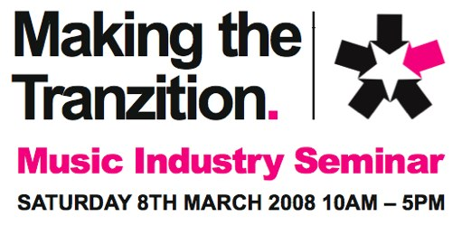

The Making the Transition seminar is all about how to make the transition into work or employment within the music industry. Speaking at the seminar will be a selected number of key local music industry ï¬gures. They will share with you their stories and experiences within the music industry. Their knowledge will give you an insight into working within the music industry and will help you to make decisions to further your career, increase your own employability and create new work opportunities.
Speakers include Gavin Monaghan, Joe Robertson, Robin Valk, Clare Edwards, Andrew Dubber, Jon Cotton and John Mostyn. The day-long event is free (booking advised) and takes place at South Birmingham College on Saturday March 8th.
Full details in this PDF (4.7MB) or at the MySpace.
Can lesson one be learning how to spell transition please? No doubt they’d tell me to ‘chillax’ and stop worrying about it. Gosh, I appear to be a bit of a language pedant. Who’d have thought it?
itz all about showing how radd & down wiv da kidz you are theze dayz, innit.
itz like, you know, gettin me well veckthed thinkin about it. laterz.
Maybe it’s my age. The creative spelling is fine – especially because it might refer to some category of music that I don’t know of. Tranz, anyone? But is that as trainz, or trannz?
What’s annoying abut that particular title is the use of obscure verbs when plain English is far better. The use of ‘transition’ and ‘transitioning’ (yeah, you too Pete) is a fuzzy substitute for change, pass, shift; a washout word in place of a an emphatic one.
If I were setting out on a career in music, an event about transitioning would equate to a composition for Muzak, the background music for offices. And maybe that’s where the Z comes in. It’s corporate.
Hey, you try coming up with snappy titles for things that already have snappy titles multiple times every day (allowing for lapses) and see how you do, matey.
I see what you mean. I also wouldn’t want to write bumpf for something I didn’t like. In this case I’d have supplied a translation, like ‘Making the change’. It would have helped minimise my annoyance with their attempts to be clever.
Your use of transitionising is a bit ambigious in that regard. I took it as humourous. But, do you expect us to ignore every grammatical faux-pas? Or do you prefer the occasional retort?
Heh, only joking. Bit ragged at the moment. Do what you will.
For the record I didn’t even notice the Z, which says a lot about my skim reading of stuff.
Or even ‘Going through the change’ – like music industry HRT…
I take Pete’s point that coming up with titles for projects is darn tricky but, for me personally, it’s the making up of words or ‘wacky’ spelling that gets wearing. Unless there’s some reason for the Z, like it’s run by ‘Z Productions Ltd’ or, as dp suggests, they’re celebrating the much overlooked musical form of ‘Tranz’, then it can make you look a bit like the project wearing the cartoon tie and saying ‘Oh, I’m mad I am’. Then again, it made me notice it I suppose, so could just be a genius marketing ruse.
I should point out though that this is a flippant response, it doesn’t actually bother me that much and I’m not sitting up at night looking at the flyer and sobbing quietly to myself. Honest.
The ‘zit’ part leaps out at me.
Perhaps they teach you how to ‘spot’ your ideal music industry job. Arf.
Would just like to report following early comments from that pedant Wedgie this went off rather well. Reports here from the younger bunch represented by marc reck http://marcreck.com/wordpress2/ who recorded the whole 6 hours!
and the senior by Nuala as videoed by Dubber here
http://www.vimeo.com/765507/